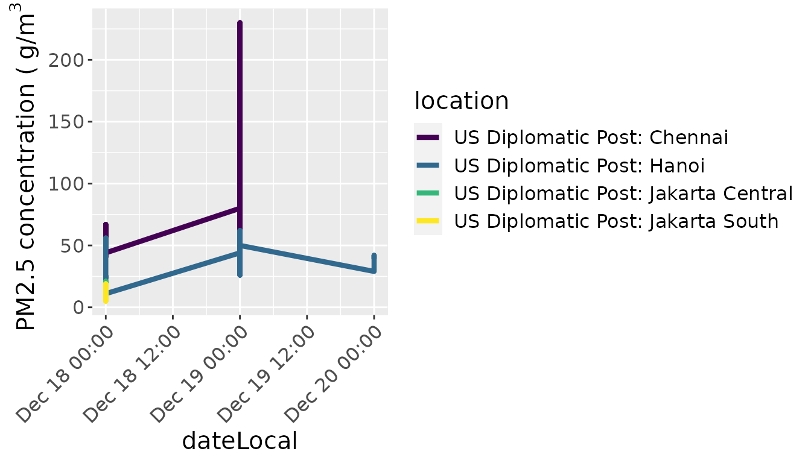
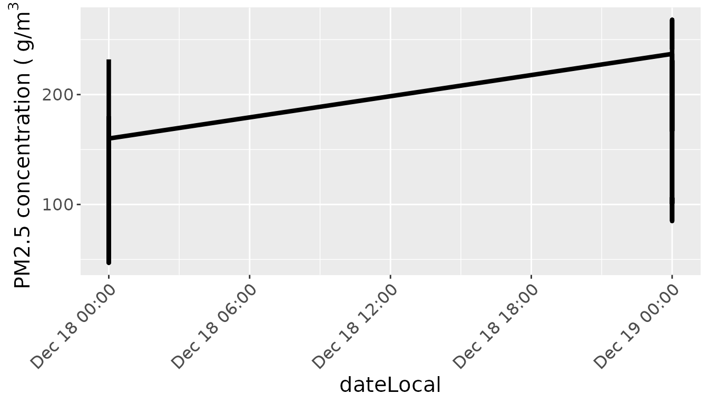

A few graphics of PM2.5 concentrations in different countries
M. Salmon
2020-12-19
Source:vignettes/articles/graphics_of_pm_25_concentrations_in_several_countries.Rmd
graphics_of_pm_25_concentrations_in_several_countries.RmdIn this vignette I want to draw a graph inspired by https://pbs.twimg.com/media/CYOAGowW8AQs4Fy.png:large.
{kind=link}
Graph 1
tbHanoi <- aq_measurements(city = "Hanoi", parameter = "pm25", date_from = as.character(Sys.Date()-1), limit = 1000)
tbJakarta <- aq_measurements(city = "Jakarta", parameter = "pm25", date_from = as.character(Sys.Date()-1), limit = 1000)
tbChennai <- aq_measurements(city = "Chennai", location = "US+Diplomatic+Post%3A+Chennai", parameter = "pm25", date_from = as.character(Sys.Date()-1), limit = 1000)
tbPM <- rbind(tbHanoi,
tbJakarta,
tbChennai)
tbPM <- filter(tbPM, value >= 0)
ggplot() + geom_line(data = tbPM,
aes(x = dateLocal, y = value, colour = location),
size = 1.5) +
ylab(expression(paste("PM2.5 concentration (", mu, "g/",m^3,")"))) +
theme(text = element_text(size = 15)) +
theme(axis.text.x = element_text(angle = 45, hjust = 1)) +
scale_color_viridis(discrete = TRUE)
Graph 2
Another graph, for Delhi.
tbIndia <- aq_measurements(country = "IN", city = "Delhi",
location = "US+Diplomatic+Post%3A+New+Delhi",
parameter = "pm25",
date_from = as.character(Sys.Date()-1), limit = 1000)
tbIndia <- filter(tbIndia, value >= 0)
ggplot() + geom_line(data = tbIndia,
aes(x = dateLocal, y = value),
size = 1.5) +
ylab(expression(paste("PM2.5 concentration (", mu, "g/",m^3,")"))) +
theme(text = element_text(size = 15))+
theme(axis.text.x = element_text(angle = 45, hjust = 1)) 